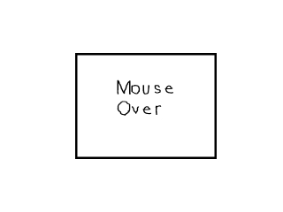
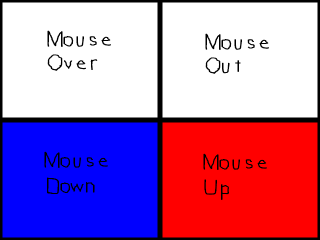

是时候学习处理鼠标事件了。本节课将教你处理各种不同类型的鼠标事件并实现一个简单的按钮。//按钮类
class Button
{
private:
//按钮的属性
SDL_Rect box;
//精灵图中显示出来的子图
SDL_Rect* clip;
public:
//初始化变量
Button( int x, int y, int w, int h );
//处理事件并设置按钮的精灵图子图
void handle_events();
//将按钮显示在窗口中
void show();
};
这是我们的Button类，我们将与它进行交互。
我们用一个矩形来定义按钮的位置和大小。我们还有一个指针，它指向了按钮所使用的精灵图子图。
然后我们有一个构造函数，它依据传入的参数设置来按钮的属性。然后是我们的
接下来是
我们用一个矩形来定义按钮的位置和大小。我们还有一个指针，它指向了按钮所使用的精灵图子图。
然后我们有一个构造函数，它依据传入的参数设置来按钮的属性。然后是我们的
handle_events() 函数，它用于处理鼠标移动事件和鼠标按钮事件。接下来是
show() 函数，它会将按钮显示到窗口中。void set_clips()
{
//分割精灵图
clips[ CLIP_MOUSEOVER ].x = 0;
clips[ CLIP_MOUSEOVER ].y = 0;
clips[ CLIP_MOUSEOVER ].w = 320;
clips[ CLIP_MOUSEOVER ].h = 240;
clips[ CLIP_MOUSEOUT ].x = 320;
clips[ CLIP_MOUSEOUT ].y = 0;
clips[ CLIP_MOUSEOUT ].w = 320;
clips[ CLIP_MOUSEOUT ].h = 240;
clips[ CLIP_MOUSEDOWN ].x = 0;
clips[ CLIP_MOUSEDOWN ].y = 240;
clips[ CLIP_MOUSEDOWN ].w = 320;
clips[ CLIP_MOUSEDOWN ].h = 240;
clips[ CLIP_MOUSEUP ].x = 320;
clips[ CLIP_MOUSEUP ].y = 240;
clips[ CLIP_MOUSEUP ].w = 320;
clips[ CLIP_MOUSEUP ].h = 240;
}
这是我们从精灵图中分割子图的函数。

你可以看到，我们有一张显示不同类型鼠标事件的精灵图。所以我们有一个包含4个SDL_Rect类型数据的数组，它被用来从精灵图中分割出每个按钮子图。每个按钮子图都有一个与之相关的常量。Button::Button( int x, int y, int w, int h )
{
//设置按钮的属性
box.x = x;
box.y = y;
box.w = w;
box.h = h;
//设置默认的子图
clip = &clips[ CLIP_MOUSEOUT ];
}
Button类的构造函数十分浅显易懂，它设置了按钮的X/Y轴上的偏移量以及其宽高。
并且它将精灵图中的某一个子图设为了默认子图。
译者注：offset直译是“偏移量”，指的从坐标原点（注意是左上角）沿着某一坐标轴平移到某一点时所经过的距离，平移方向决定了+/-号，故含义上同“坐标”。因此本文中的“偏移量”与“坐标”指的是一个概念，并且为了保证语句通顺，“偏移量”与“坐标”两种翻译可能都会用到。
并且它将精灵图中的某一个子图设为了默认子图。
void Button::handle_events()
{
//鼠标坐标
int x = 0, y = 0;
//如果鼠标发生了移动
if( event.type == SDL_MOUSEMOTION )
{
//获得鼠标坐标
x = event.motion.x;
y = event.motion.y;
//如果鼠标在按钮上方
if( ( x > box.x ) && ( x < box.x + box.w ) && ( y > box.y ) && ( y < box.y + box.h ) )
{
//设置按钮子图
clip = &clips[ CLIP_MOUSEOVER ];
}
//如果不是
else
{
//设置按钮子图
clip = &clips[ CLIP_MOUSEOUT ];
}
}
在事件处理函数中，我们首先要做的是检查鼠标是否发生了移动。鼠标移动后，会产生一个
如果鼠标发生了移动，我们从事件结构体中获取鼠标的偏移量，然后检查鼠标是否在按钮的上方。如果鼠标在按钮的上方，我们将按钮的子图设为“Mouse Over”子图，否则设为“Mouse Out”子图。
SDL_MOUSEMOTION 事件。如果鼠标发生了移动，我们从事件结构体中获取鼠标的偏移量，然后检查鼠标是否在按钮的上方。如果鼠标在按钮的上方，我们将按钮的子图设为“Mouse Over”子图，否则设为“Mouse Out”子图。
//如果一个鼠标按钮被按下了
if( event.type == SDL_MOUSEBUTTONDOWN )
{
//如果鼠标左键被按下了
if( event.button.button == SDL_BUTTON_LEFT )
{
//获取鼠标坐标
x = event.button.x;
y = event.button.y;
//如果鼠标在按钮上方
if( ( x > box.x ) && ( x < box.x + box.w ) && ( y > box.y ) && ( y < box.y + box.h ) )
{
//设置按钮子图
clip = &clips[ CLIP_MOUSEDOWN ];
}
}
}
然后我们检查是否有鼠标按钮被按下了。如果一个鼠标按钮被按下，它会产生一个
因为我们想让按钮只与鼠标左键交互，所以我们检查一下鼠标左键是否被按下。
然后我们再检查一下是否是当鼠标位于按钮上方时，发生了左键单击事件。如果是的，将按钮子图设为“Mouse Down”子图。
SDL_MOUSEBUTTONDOWN事件。因为我们想让按钮只与鼠标左键交互，所以我们检查一下鼠标左键是否被按下。
然后我们再检查一下是否是当鼠标位于按钮上方时，发生了左键单击事件。如果是的，将按钮子图设为“Mouse Down”子图。
//如果一个鼠标按钮被释放了
if( event.type == SDL_MOUSEBUTTONUP )
{
//如果鼠标左键被释放了
if( event.button.button == SDL_BUTTON_LEFT )
{
//获取鼠标坐标
x = event.button.x;
y = event.button.y;
//如果鼠标在按钮上方
if( ( x > box.x ) && ( x < box.x + box.w ) && ( y > box.y ) && ( y < box.y + box.h ) )
{
//设置按钮子图
clip = &clips[ CLIP_MOUSEUP ];
}
}
}
}
然后我们检查是否有鼠标按钮被释放了。如果一个鼠标按钮被释放，它会产生一个
在这个程序里，我们通过事件结构体来获取鼠标的坐标。实际上，通过
SDL_MOUSEBUTTONUP 事件。
在这个程序里，我们通过事件结构体来获取鼠标的坐标。实际上，通过
SDL_GetMouseState()这个函数来获取鼠标坐标会更高效，但是...呃...我懒得回去改代码了。void Button::show()
{
//显示按钮
apply_surface( box.x, box.y, buttonSheet, screen, clip );
}
接下来，我们让按钮的子图显示在窗口中。
//分割精灵图
set_clips();
//新建按钮
Button myButton( 170, 120, 320, 240 );
在main()函数的顶部，我们在做完初始化和加载后，要先分割精灵图并新建我们的按钮。
//当用户还没有退出
while( quit == false )
{
//如果有事件需要处理
if( SDL_PollEvent( &event ) )
{
//处理鼠标按钮事件
myButton.handle_events();
//如果用户点击了窗口右上角的关闭按钮
if( event.type == SDL_QUIT )
{
//退出程序
quit = true;
}
}
//使用白色填充整个窗口
SDL_FillRect( screen, &screen->clip_rect, SDL_MapRGB( screen->format, 0xFF, 0xFF, 0xFF ) );
//显示按钮
myButton.show();
//更新窗口
if( SDL_Flip( screen ) == -1 )
{
return 1;
}
}
这里展示了Button类在主循环中的具体用法。
一开始我们要处理事件。你可以看出来，我们使用了Button类的事件处理函数并且我们也检查用户是否需要退出。
一般情况下，我们使用while循环来处理事件，但在本节课中（以及前面一节课中），我们都用了“if”。这么做会使得每一帧中仅有一个事件被处理，于是可以更容易地观察到单独的事件。但在绝大多数真实的应用中，你会使用“while”循环，因为你需要在每一帧中处理所有新的事件。
事件处理完毕后，我们用填充白色的方法清除窗口中旧的图像。然后我们让按钮显示出来并更新窗口。
下面主循环会继续运行，所以我们可以一帧一帧地渲染，直到用户请求退出。
一开始我们要处理事件。你可以看出来，我们使用了Button类的事件处理函数并且我们也检查用户是否需要退出。
一般情况下，我们使用while循环来处理事件，但在本节课中（以及前面一节课中），我们都用了“if”。这么做会使得每一帧中仅有一个事件被处理，于是可以更容易地观察到单独的事件。但在绝大多数真实的应用中，你会使用“while”循环，因为你需要在每一帧中处理所有新的事件。
事件处理完毕后，我们用填充白色的方法清除窗口中旧的图像。然后我们让按钮显示出来并更新窗口。
下面主循环会继续运行，所以我们可以一帧一帧地渲染，直到用户请求退出。
对于你们当中使用较快电脑的人来说，可能看不到“Mouse Up”子图。这是因为这程序跑得太快了，以至于这个子图仅仅显示了极短的时间。幸运的是，我们下面会有一系列关于计时和调节帧率的教程。如果你将程序的运行速度调节到20帧每秒以下，你至少应该可以注意到这个子图。